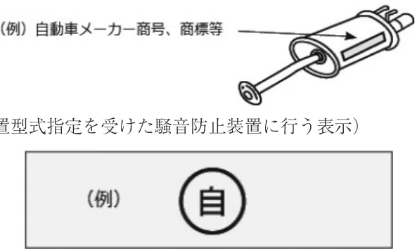
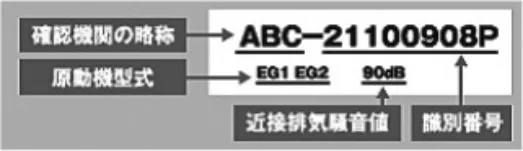
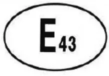
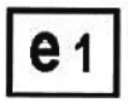

ラリー車両およびスピードSA車両の後付マフラーに関する細則
JAF の公式サイトではありません。JAF が公開する PDF を自動変換した非公式の検索用アーカイブです。記載内容は必ず JAF の原本 PDF で出典をご確認ください。
P.1ラリー車両およびスピードＳＡ車両の後付マフラーに関する細則
平成22年４月以降に生産された車両（当該車両の自動車検査証の備考欄に「マフラー加速騒音規制適用車」の記載があ
る車両）のマフラーは、以下を満足していること。
なお、平成28年10月１日以降に型式指定を受けた車両に後付消音器を装着する場合は、該当する道路運送車両の保安基
準の細目告示（平成28年４月20日施行）に従った騒音基準を満たすこと。
１消音器の騒音低減機構を容易に除去できる構造（一酸化炭素等発散防止装置と構造上一体となっている消音器であって、当該一酸化炭素等発散防止装置の点検又は整備のために分解しなければならない構造のものを除く。）でないこと。２次のいずれかの表示があること。
（１）純正品表示
（車両型式認証を受けた自動車等が備える純正マフラーに行う表示）

（２）装置型式指定品表示（装置型式指定を受けた騒音防止装置に行う表示）
（３）性能等確認済表示
（登録性能等確認機関が確認した交換用マフラーに行う表示）
（例）

（第１種後付消音器の性能等確認済表示の例）
確認機関の略称の例：JQR JATA JARI
（４）国連欧州経済委員会規則（ＵＮ規則）適合表示（Ｅマーク）

（５）欧州連合指令（ＥＵ指令）適合品表示（ｅマーク）

３次のいずれかの自動車等が現に備えているマフラー
（１）加速走行騒音レベルが82ｄＢ以下である車両。公的試験機関が実施した試験結果（加速走行騒音試験結果）が必用となる。
（２）加速走行騒音レベルがＵＮ規則またはＥＵ指令に適合する車両等。
外国の法令に基づく書面または表示で確認することができる。例えば以下のものがある。（ただし、同一性や基
P.2準への適合性が明らかであることが必用。）
①ＣＯＣペーパー（ＥＵ指令に基づく車両型式認可車両に交付される適合証明書）
②ＷＶＴＡラベルまたはプレート（ＥＵ指令に基づく車両型式認可を受けた車両に貼付されている当該車両型式認可番号が表示されているもの。）